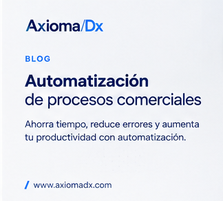

CRM
¿Qué es Kommo y cómo puede ayudarte a vender más?
Descubre cómo utilizar un CRM para organizar leads, automatizar seguimiento y mejorar la conversión comercial.
Estrategias, consejos y análisis para mejorar ventas, seguimiento comercial, procesos y transformación digital.
Descubre cómo utilizar un CRM para organizar leads, automatizar seguimiento y mejorar la conversión comercial.

Identifica las tareas repetitivas que están consumiendo tiempo de tu equipo comercial.

Cómo detectar fugas en tu proceso comercial y construir un sistema de seguimiento que no dependa de la memoria.
Analizamos tu operación y te ayudamos a identificar oportunidades de CRM, automatización y mejora comercial.
Solicitar diagnóstico